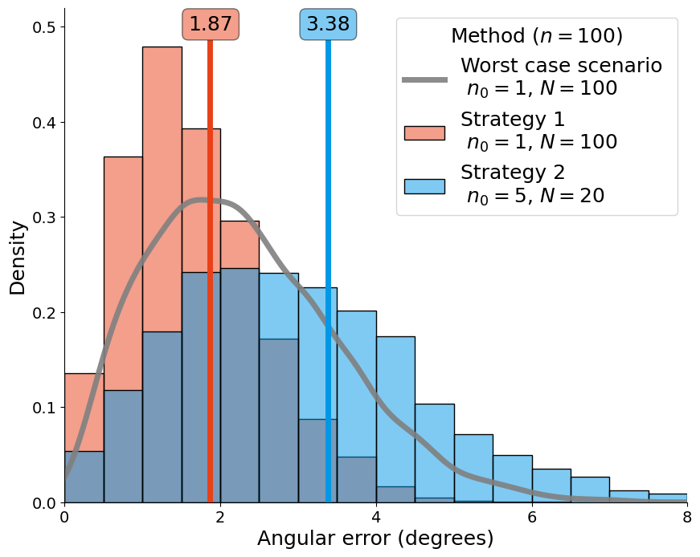

Figure 3: Histogram comparing sampling strategies#
import numpy as np
import pandas as pd
import matplotlib.pyplot as plt
import seaborn as sns
import pmagpy.pmag as pmag
import pmagpy.ipmag as ipmag
import smpsite as smp
import warnings
warnings.filterwarnings('ignore')
%matplotlib inline
Run simulation#
This notebook also includes how to run the simulation for the histograms.
%%time
angular_dispersio_within_site = 10 # degrees
kappa_within_site = smp.angular2kappa(angular_dispersio_within_site)
latitude = 30
outlier_rate = 0.10
n_iters = 5000
params1 = smp.Params(N=100,
n0=1,
kappa_within_site=kappa_within_site,
site_lat=latitude,
site_long=0,
outlier_rate=outlier_rate,
secular_method="G",
kappa_secular=None)
params2 = smp.Params(N=20,
n0=5,
kappa_within_site=kappa_within_site,
site_lat=latitude,
site_long=0,
outlier_rate=outlier_rate,
secular_method="G",
kappa_secular=None)
df_false = smp.simulate_estimations(params1, n_iters=n_iters, ignore_outliers="False")
df_true = smp.simulate_estimations(params2, n_iters=n_iters, ignore_outliers="True")
df_vandamme = smp.simulate_estimations(params1, n_iters=n_iters, ignore_outliers="vandamme")
df_false.to_csv("../../outputs/fig3a_df_false.csv")
df_true.to_csv("../../outputs/fig3a_df_true.csv")
df_vandamme.to_csv("../../outputs/fig3a_df_vandamme.csv")
CPU times: user 33min 41s, sys: 123 ms, total: 33min 41s
Wall time: 33min 41s
Figure#
panel = 'a'
# panel = 'b'
# panel = 'c'
df_false = pd.read_csv("../../outputs/fig3"+panel+"_df_false.csv")
df_true = pd.read_csv("../../outputs/fig3"+panel+"_df_true.csv")
df_vandamme = pd.read_csv("../../outputs/fig3"+panel+"_df_vandamme.csv")
df_true
| Unnamed: 0 | plong | plat | total_samples | samples_per_sites | S2_vgp | error_angle | S2_vgp_real | n_tot | N | n0 | kappa_within_site | site_lat | site_long | outlier_rate | secular_method | kappa_secular | ignore_outliers | |
|---|---|---|---|---|---|---|---|---|---|---|---|---|---|---|---|---|---|---|
| 0 | 0 | 32.819135 | 85.344279 | 90.0 | 5 | 231.031816 | 4.655721 | 191.7229 | 100 | 20 | 5 | 66.069981 | 30 | 0 | 0.1 | G | NaN | True |
| 1 | 1 | 89.668268 | 88.004102 | 90.0 | 5 | 157.198505 | 1.995898 | 191.7229 | 100 | 20 | 5 | 66.069981 | 30 | 0 | 0.1 | G | NaN | True |
| 2 | 2 | 227.926527 | 85.050967 | 91.0 | 5 | 226.774100 | 4.949033 | 191.7229 | 100 | 20 | 5 | 66.069981 | 30 | 0 | 0.1 | G | NaN | True |
| 3 | 3 | 359.624424 | 88.160502 | 89.0 | 5 | 148.867578 | 1.839498 | 191.7229 | 100 | 20 | 5 | 66.069981 | 30 | 0 | 0.1 | G | NaN | True |
| 4 | 4 | 158.839828 | 86.495387 | 88.0 | 5 | 243.249426 | 3.504613 | 191.7229 | 100 | 20 | 5 | 66.069981 | 30 | 0 | 0.1 | G | NaN | True |
| ... | ... | ... | ... | ... | ... | ... | ... | ... | ... | ... | ... | ... | ... | ... | ... | ... | ... | ... |
| 4995 | 4995 | 57.557444 | 88.540501 | 92.0 | 5 | 111.690809 | 1.459499 | 191.7229 | 100 | 20 | 5 | 66.069981 | 30 | 0 | 0.1 | G | NaN | True |
| 4996 | 4996 | 95.753147 | 86.080494 | 90.0 | 5 | 164.465341 | 3.919506 | 191.7229 | 100 | 20 | 5 | 66.069981 | 30 | 0 | 0.1 | G | NaN | True |
| 4997 | 4997 | 203.465494 | 86.316174 | 88.0 | 5 | 231.034144 | 3.683826 | 191.7229 | 100 | 20 | 5 | 66.069981 | 30 | 0 | 0.1 | G | NaN | True |
| 4998 | 4998 | 21.154015 | 85.254540 | 89.0 | 5 | 218.953675 | 4.745460 | 191.7229 | 100 | 20 | 5 | 66.069981 | 30 | 0 | 0.1 | G | NaN | True |
| 4999 | 4999 | 36.321120 | 87.462613 | 92.0 | 5 | 225.888146 | 2.537387 | 191.7229 | 100 | 20 | 5 | 66.069981 | 30 | 0 | 0.1 | G | NaN | True |
5000 rows × 18 columns
%matplotlib inline
if panel == 'a':
x_max = 8
y_max = 0.52
bw = 0.5
elif panel == 'b':
x_max = 8
y_max = 0.4
bw = 0.5
elif panel == 'c':
x_max = 14
y_max = 0.25
bw = 1.0
fig, axes = plt.subplots(nrows=1, ncols=1, figsize=(10,8))
# Histograms
sns.histplot(df_vandamme.error_angle, ax=axes, color='#e84118', stat='density', binwidth=bw, binrange=(0,20), alpha=.5, label="Strategy 1 \n $n_0=1$, $N=100$")
sns.histplot(df_true.error_angle, ax=axes, color='#0097e6', stat='density', binwidth=bw, binrange=(0,20), alpha=.5, label="Strategy 2 \n $n_0=5$, $N=20$")
# Density plot
sns.kdeplot(df_false.error_angle, ax=axes, color='grey', alpha=.9, lw=5, label="Worst case scenario \n $n_0=1$, $N=100$")
rmse1 = np.round(np.mean(df_vandamme.error_angle**2)**.5, decimals=2)
rmse2 = np.round(np.mean(df_true.error_angle**2)**.5, decimals=2)
plt.axvline(x=rmse1, ymax=0.93, c='#e84118', lw=5)
plt.axvline(x=rmse2, ymax=0.93, c='#0097e6', lw=5)
props = dict(boxstyle='round', facecolor="#e84118", alpha=0.5)
plt.text(rmse1/x_max-0.035, 0.986, "{}".format(rmse1), transform=axes.transAxes, fontsize=18,
verticalalignment='top', bbox=props);
props = dict(boxstyle='round', facecolor='#0097e6', alpha=0.5)
plt.text(rmse2/x_max-0.035, 0.986, "{}".format(rmse2), transform=axes.transAxes, fontsize=18,
verticalalignment='top', bbox=props);
plt.xlim(0, x_max)
plt.ylim(0, y_max)
plt.xlabel("Angular error (degrees)", fontsize=18)
plt.ylabel("Density", fontsize=18)
plt.xticks(np.arange(0.0, x_max+0.1, 2.0), fontsize=14);
plt.yticks(fontsize=14)
plt.legend(title="Method ($n=100$)", title_fontsize=18, fontsize=18)
ax = plt.gca()
ax.spines[['right', 'top']].set_visible(False)
plt.savefig("Figure3{}.pdf".format(panel), format="pdf", bbox_inches='tight')
plt.savefig("Figure3{}.png".format(panel), format="png", bbox_inches='tight')
